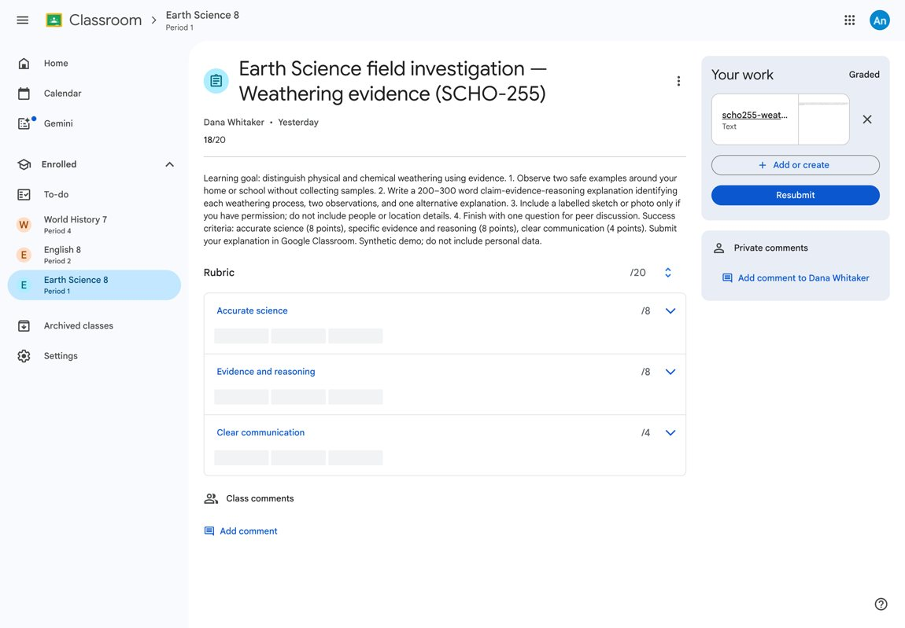
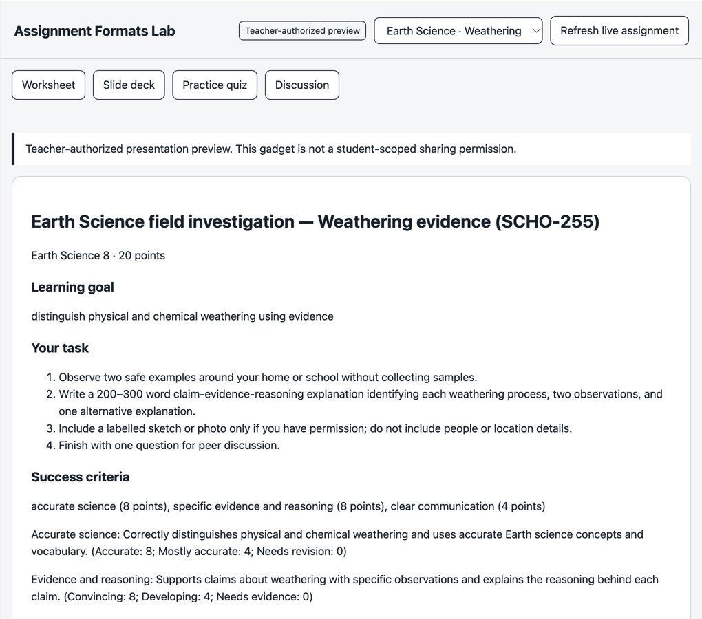
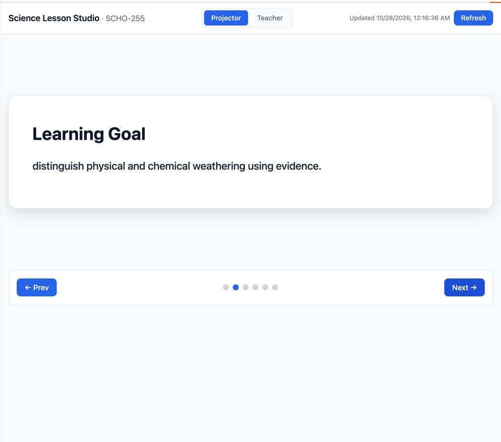
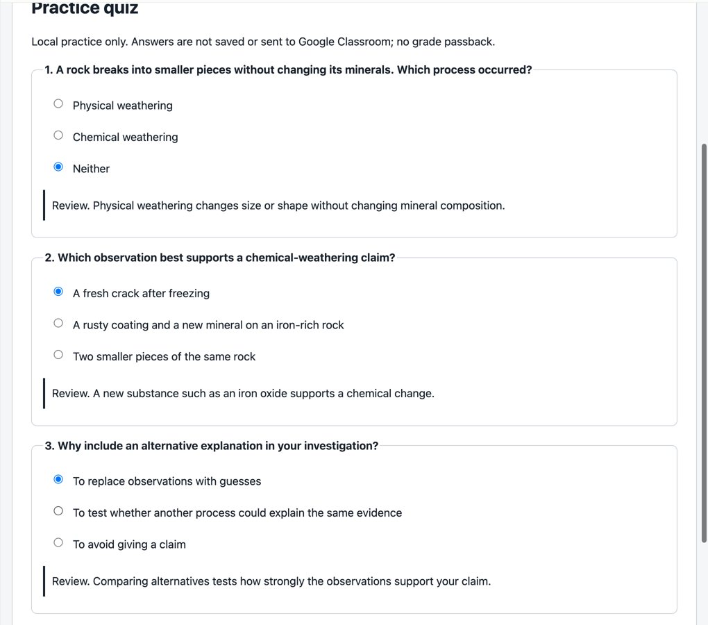
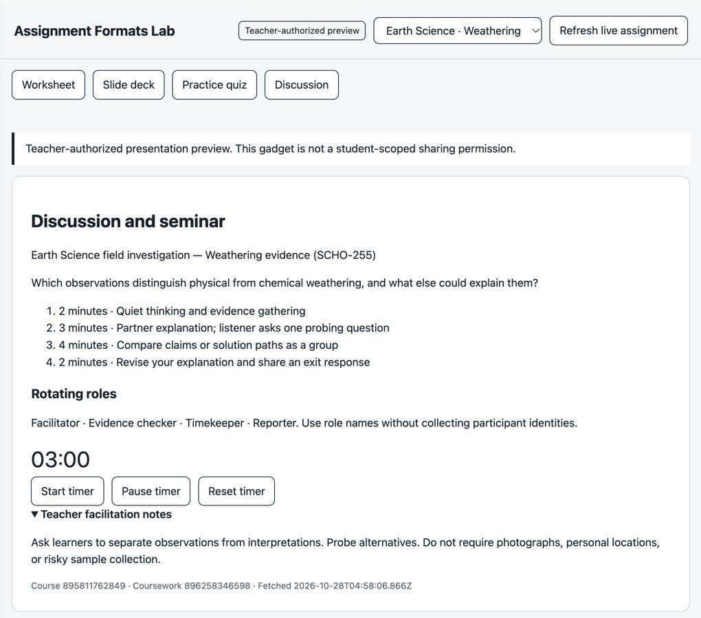
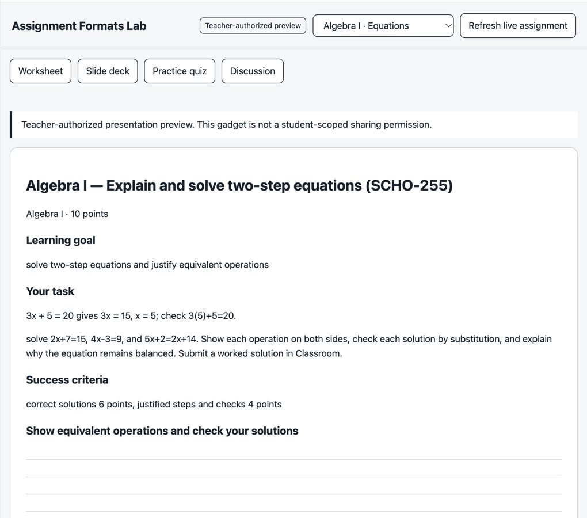
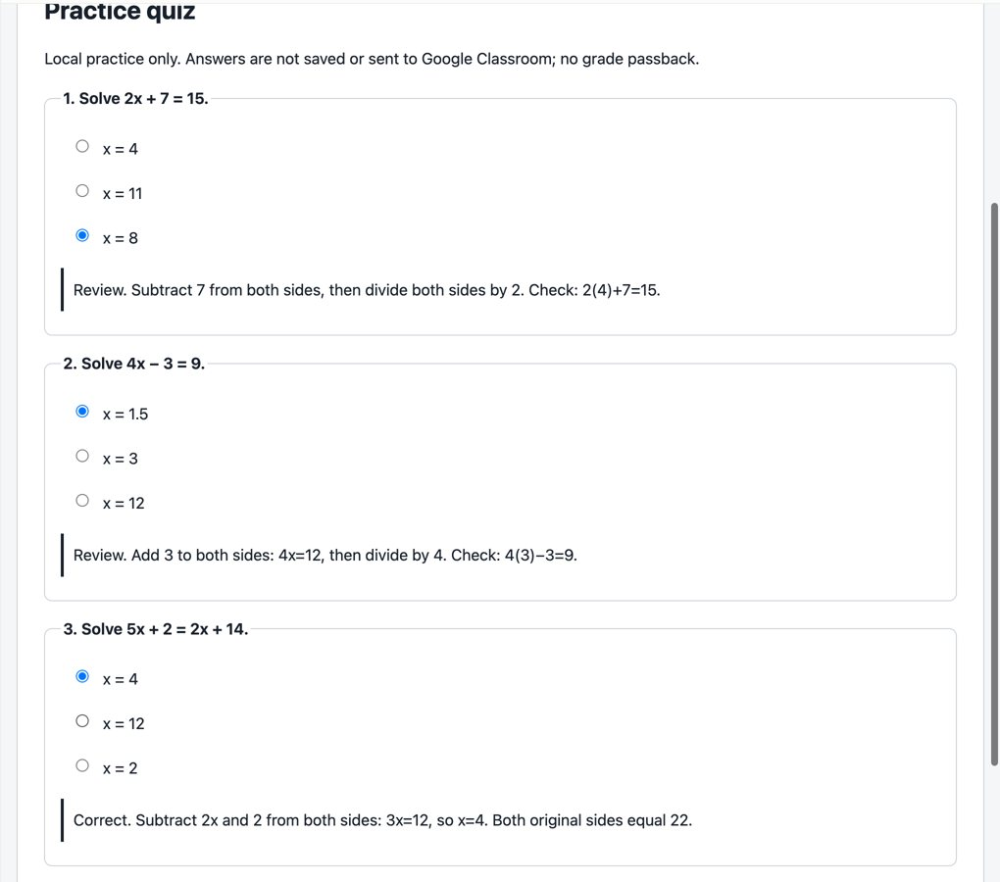
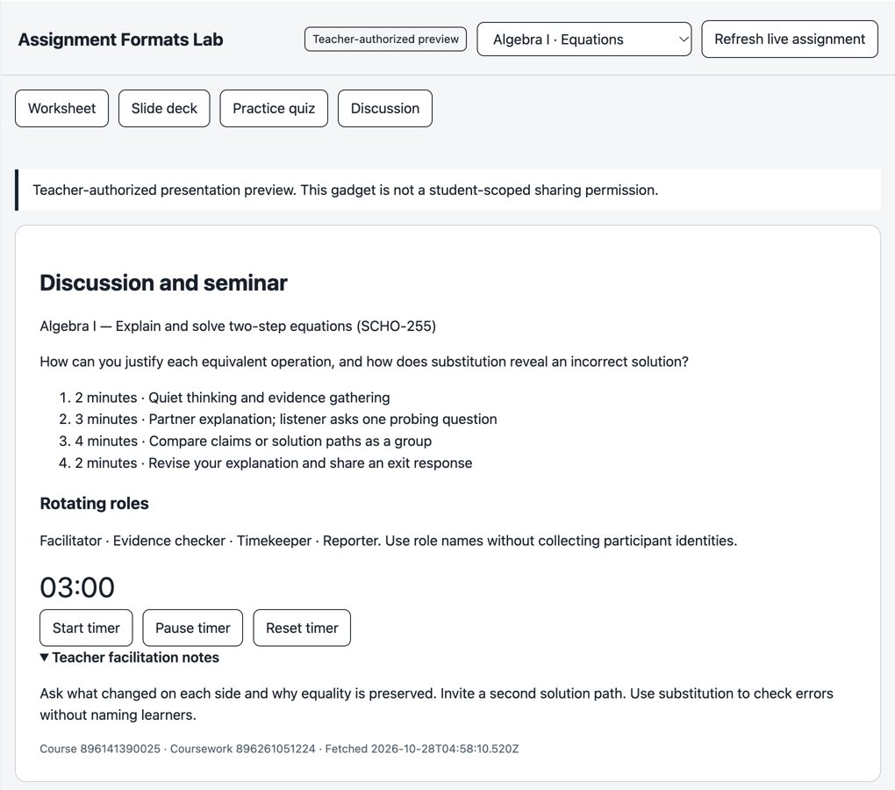

Turn connected school data into useful teaching applications.
Google demonstrates the learning workflow. Clever can help supply the trusted identity, enrollment and launch foundation across schools.
What we can show
A real assignment and rubric, an approved grade returned to a learner, two classes and multiple teaching formats.
What we want to agree
A synthetic sandbox with the right API version, roster entitlements, role identities and a joint validation owner.
Synthetic demo accounts. Demonstrated, implemented and pending capabilities are labeled separately. Meeting date/time to be confirmed.
One authorized connection. Reasoning and applications built around it.
Reusable by design
Blueprints carry reviewed code and required binding shapes. Each new instance supplies its own authorized connections.
Clever's prospective role
Identity → district → school → section → teacher/student membership → correct launch context. Learning actions remain with the connected LMS.
A Clever login is not a Google permission grant. Roster context and learning-content authority are separate.
A real assignment, submission and returned result.
- Teacher publishes a 20-point weathering investigation through EducateOS approval.
- Teacher creates a rubric: science 8, evidence/reasoning 8, communication 4.
- An attaches work and turns it in through Google Classroom.
- EducateOS queues the teacher's 18/20 grade and return for approval.
- The learner's own Google Classroom session shows 18/20 and the attachment.
This proves Google learner visibility. EducateOS student OAuth and personal-gadget turn-in are a separate acceptance gate.

Ask a question. Check its answer against the same live source.
Teacher code-mode prompt
Read the connected Science course and published weathering assignment. Return its actual title, point maximum and rubric levels, with source IDs and fetch time. Explain the learning goal using the returned instructions. Do not read the roster or write anything.
Then compare the gadget
Refresh the worksheet, inspect its source/time and compare the same title, points and success criteria. Narration follows retrieved values.
Visible control
Demonstrated: rejected draft requests leave Google unchanged; an approved draft is created once.
For a fresh demo, use a separate synthetic rehearsal assignment. Check Approvals and committed provider readback before describing a write as complete.
Fresh rehearsal required before live mutationEngineering detail
The Formats Lab calls course/work reads through its bound teacher sessions, refuses draft/pending work, and returns a lesson projection. It does not call roster or submission methods. That projection limits its output; the teacher connection still has teacher authority.
One investigation. Four ways to teach it.




The same application adapts to a different subject.



Six portable outputs
Science: worksheet PDF · 9-slide PDF · PowerPoint
Algebra: worksheet PDF · 7-slide PDF · PowerPoint
Original exports retain source IDs and fetch times. These are gadget-rendered slides and PPTX, independent of native Google Slides editing.
Each learner gets a personal capability and their own instance.
Personal Classroom companion
- Published assignments and materials in one enrolled course.
- Only the signed-in learner's own submission.
- Turn-in request → approval → Google readback.
- No roster, classmates' work, grades or teacher configuration methods.
Instructor distribution
- Publish reviewed companion code as a blueprint.
- Each learner creates a new instance.
- Each learner connects their own Google account/course.
- Verify a second learner, non-member and revoked account.
Prepare answers/attachments and see returned grades in Google Classroom. This student API cannot upload files, author answers or reclaim work. Personal student resources refuse collaborator sharing.
Do not share a teacher workspace as a learner application. A presentation filter cannot remove the teacher capability.
14 resource types support more than one teaching workflow.
| Google surface | Useful teaching application | Evidence status |
|---|---|---|
| Classroom teacher + student | Assignments, lesson resources, personal work and controlled lifecycle actions | Teacher lifecycle demonstrated; student live acceptance open |
| Drive account / folder / file | Resource discovery and native file reading with exact scope | Implemented; teaching/sharing rehearsal open; no generic upload/share/delete |
| Docs / Sheets / Slides | Reading guides, lab data, native presentations and approved edits | Implemented; native Google teaching workflows unrehearsed |
| Calendar | Agenda, study planning and approved event management | Implemented; invitation/student visibility rehearsal open |
| Chat account / conversation / thread | Private teacher assistant or a separately authorized class discussion | Implemented; whole-account Chat unshareable |
| Gmail / BigQuery | Private communication / controlled synthetic data exploration | Implemented; classroom recipes unrehearsed; privacy/cost boundaries apply |
Plus features and validation limits
Rubric creation/read and total-grade return have real evidence. Rubric replacement/deletion and grading-period settings are implemented; live mutation/restore and unlicensed cases are open. Classroom add-on implementation, Marketplace/project setup and real launch are open. Fresh tenant preflight passed rubric and period reads and delegated token minting; eligibility preview endpoints returned 404.
Two independent blockers need two explicit answers.
v3.1 → 403
version not supported
Our adapter targets v3.1. The app's sandbox accepts v3.0 for the district endpoint.
Ask: enable v3.1, or confirm the supported v3.0 contract and migration path.
v3.0 roster → 401
Resource is not available for token
Schools, users, sections and terms are unavailable; events also returns 401. Districts returns 200.
Ask: the supported roster product, app access and district-approved field sharing.
Current token scope names
read:district_admins_basic read:school_admins_basic read:students_basic read:teachers_basic read:user_id
App: educateos-dev. These are basic identity grants, not proof of full roster access. Courses access is not established by the successful recorded calls. Ask Clever to confirm actual product/scope names. No new authenticated probe was performed for this kit.
Give us enough access to prove the integration safely.
| Priority | Request | What it lets us prove |
|---|---|---|
| P0 | Supported API version and roster data entitlement, with district-approved fields | Full preview/apply of districts, schools, users, terms, courses and sections |
| P0 | District/school admins, two teachers, two students sharing a class, a non-member and a multi-role user | Role-aware identity, same-class personal isolation and denied access |
| P0 | A second isolated district and correct portal/OIDC configuration | Stable IDs, district claims, multi-role subject and correct launch routing |
| P1 | Events access and cursor contract, or agreed complete-refresh fallback | Enrollment change, removal, safe cursor recovery and revocation |
| P1 | Consent, sharing, quotas, token rotation/reset guidance and named owners | Repeatable onboarding and failure/recovery acceptance |
We are not assuming Clever supplies coursework editing, submissions or grade writeback. Confirm the product/provider for each; Google supplies the demonstrated learning actions.
Leave with a test we can complete together.
| Owner | Commitment to confirm |
|---|---|
| Clever technical owner | Version, products/scopes, field sharing, SSO claims, event semantics and synthetic fixtures |
| EducateOS | Adapter conformance, identity mapping, least-privilege gadget bindings, rejection/recovery checks and evidence |
| Joint | Test date, pilot district consent, pass/fail record and escalation path |
Success means observed provider results with identities, revision, run/action IDs and timestamps. A mock, deployed source or healthy endpoint alone does not pass a live workflow.
Can we agree the access path and a joint test owner?
- Which Data API version and roster product should this app use?
- Who can enable the synthetic fixtures, district sharing and role/launch configuration?
- Can events be enabled, and what recovery contract applies?
- When can we run the acceptance checklist together?
The kit
Demonstration sequence · Source-grounded prompts · Science and Algebra exports · Personal student companion source · Google capability inventory · Access matrix · Evidence ledger · Pilot acceptance criteria
Prepared for review and local sharing. No material has been sent to Clever automatically. Full Google delivery remains in progress; the remaining gates are explicit.